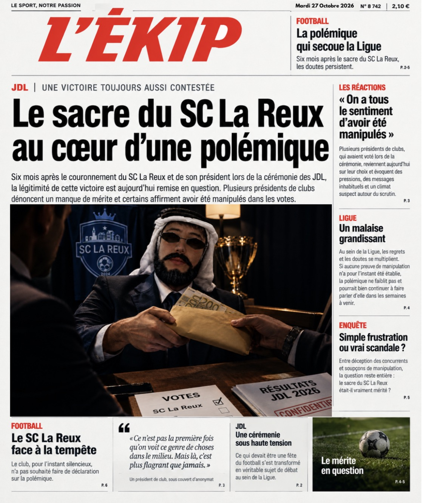
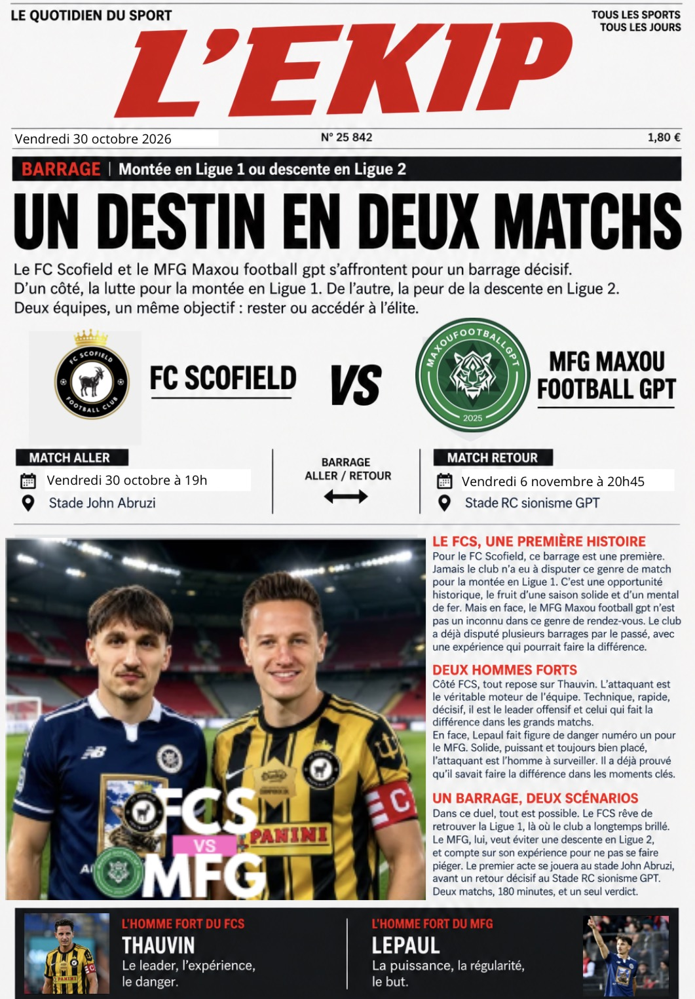

LIRE L'ARTICLE ↗JDL · ENQUÊTE
Le sacre du SC La Reux au cœur d'une polémique
Six mois après le couronnement, la légitimité de cette victoire est remise en question.
Voir l'édition complète →FC Scofield
Maxou Football GPT
L'ACTUALITÉ SPORTIVE
Retrouvez les dernières publications de la rédaction de L'EKIP.

LIRE L'ARTICLE ↗JDL · ENQUÊTE
Six mois après le couronnement, la légitimité de cette victoire est remise en question.
Voir l'édition complète →
LIRE L'ARTICLE ↗FOOTBALL · BARRAGE
Le FC Scofield et le MFG s'affrontent pour un barrage décisif.
Voir l'édition complète →